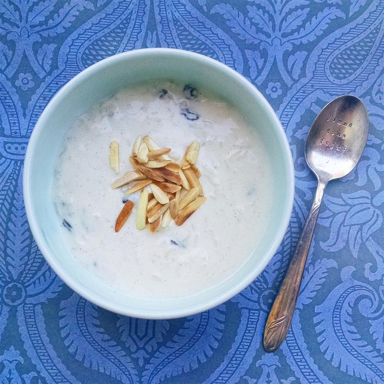

Prep Time 5 mins
Cook Time 30 mins
Total Time 35 mins
Servings 4
Kheer is a sweet Indian rice pudding flavored with cardamon, pistachios, and dried fruit. This easy recipe makes 4 bowls of this rich and creamy dessert — it's the best rice pudding I've ever had!
Bring coconut milk, milk, and sugar to a boil in a large saucepan over medium heat. Add rice, reduce the heat to low, and simmer until mixture thickens and rice is tender, about 20 minutes.
Stir in raisins, cardamom, and rose water; cook for a few more minutes. Ladle into serving bowls and garnish with almonds and pistachios.